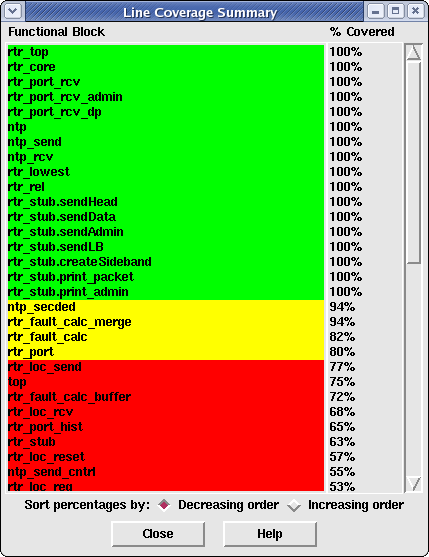

The Summary Report window allows the user to at-a-glance see how well each of the modules or instances is achieving coverage for a given coverage metric. The modules/instances are ordered according to percentage of coverage for the current metric. They are also highlighted in red, yellow and green to indicate the level of coverage achievement each module/instance has made for the current coverage metric.
Figure 1. shows an example of a summary report based on module-line coverage. The user-specified Line Coverage % goal was set to 80%.
Figure 1. Summary Report Window
The contents of the Summary Report window are selected by the current mode in the Main Window. To view the summary report by module, select the Report > Module-Based option. If the Summary Report window is already displayed, selecting this option will automatically cause the Summary Report information to be displayed by module. Likewise, to view the summary report by instance, select the Report > Instance-Based option.
To view a summary report based on different the coverage metrics, simply select one of the buttons in the main window. Doing so will automatically cause all percentages to be redisplayed for the new coverage metric and will automatically cause these modules/instances to be re-ordered based on the new percentages.
To view the coverage details for a specific module/instance back in the main window, simply click on the name of the module/instance in the summary window. The main window will jump to the selected module/instance, displaying/highlighting the code for that module in the Coverage File Viewer.
By default, all modules/instances are displayed in the Summary Report window in decreasing order by coverage percentage. The user may change this ordering to increasing order (the lowest percentage will be displayed at the top of the window), by selecting the "Increasing Order" button. The user may switch back to decreasing ordered display by selecting the "Decreasing Order" button.
Click on this button to close the summary window.
Click on this button to display this help page in a browser.